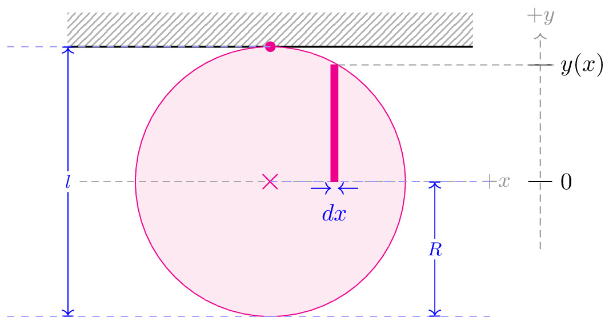

pre.tex
\documentclass[tikz]{standalone}\input{pre.tex}\begin{document}\begin{tikzpicture}
\draw[interface] (-3,2) coordinate (lb) rectangle ++ (6,0.5);
\draw[thick] (lb) -- ++(6,0);
\draw[magenta, fill=magenta!10] (0,0) circle (2cm);
\draw[magenta, fill=magenta] (0,2) circle (2pt);
% \draw (0,-2.5) node[blue]{$\bigotimes$} node[right] {$\vec{v}$};
\draw[axis] (-3,0) -- (3,0) node [right] {$+x$};
\draw (0,0) node[magenta, scale=1.35]{$\times$};
\begin{scope}[yshift=-2cm, xshift=0cm]
\lineann[4cm]{90}{4}{$l$};
\end{scope}
\begin{scope}[yshift=0cm, xshift=0cm]
\lineann[3.25cm]{-90}{2}{$R$};
\end{scope}
\draw[magenta, fill=magenta!100] (1,0) -- ++(0, 1.73) coordinate (o) -- ++ (-0.1,0) coordinate (I) -- ++ (0,-1.73) coordinate (II) -- cycle;
\draw[axis,->] (4,-1) -- ++(0,3.2) node[above] {$+y$};
\hrLabel{4}{0}{$0$};
\hrLabel{4}{1.73}{$y(x)$};
\draw[axis] (o) -- ++ (3.2,0);
\draw[blue,<-] (0.9, -0.1) -- ++ (-0.3,0);
\draw[blue,<-] (1, -0.1) -- ++ (0.3,0);
\draw[blue] ($(0.9, -0.1)!0.5!(1, -0.1)$) node[below, yshift=-0.3em] {$dx$};
\end{tikzpicture}\end{document}